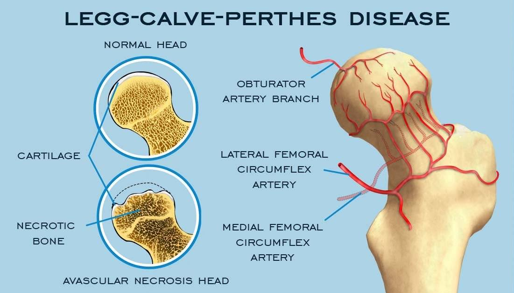

Leg - Calvé - Perthes Information
The causes for which it is contracted are unknown, it is not hereditary, because studies reveal that 5% of patients have a relative with this disease. It is ruled out that it is caused by a direct injury to the hip.
Symptoms usually begin to be seen between the ages of 2 and 15. Boys are more likely to be affected than girls.
The diagnosis of Perthes disease requires a careful history, physical examination, and x-rays. Since these symptoms and signs are not specific to the disease, x-rays are required to confirm the presence of Perthes. Since Perthes is a diagnosis of exclusion, other childhood hip conditions that may mimic Perthes disease must be excluded.
SYMPTOM:
Pain and lameness are two common symptoms and these start gradually. Pain in the thighs or knees may also be experienced, delaying proper diagnosis.
DIAGNOSIS:
Perthes disease occurs when the arteries that supply blood to the base of the hip are damaged or blocked. Inadequate blood supply can cause the femoral head to atrophy and die. Without the femoral head, the hip socket fails, resulting in pain and loss of mobility.
